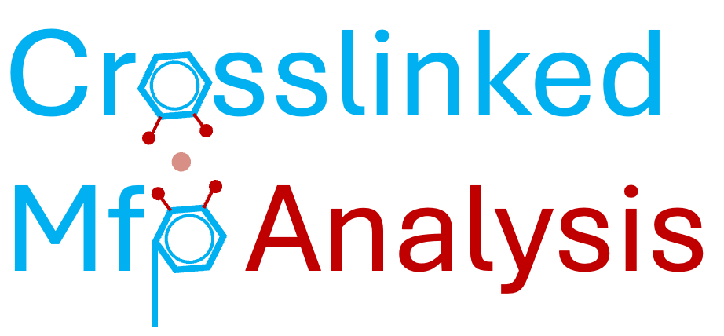

crosslinked_mfp_analysis 
Contents:
crosslinked_mfp_analysis
crosslinked_mfp_analysis
Index
Index
C
|
E
|
G
|
I
|
M
|
P
|
R
|
S
|
T
|
U
C
collect_ion_surroundings() (in module crosslinked_mfp_analysis.analyze_ion_surroundings)
collect_og312_surroundings() (in module crosslinked_mfp_analysis.analyze_og312_surroundings)
convert_types_to_labels() (in module crosslinked_mfp_analysis.analyze_covalent_bonds)
count_atom_types_around_ion_over_time() (in module crosslinked_mfp_analysis.analyze_ion_surroundings)
count_atom_types_around_og312_over_time() (in module crosslinked_mfp_analysis.analyze_og312_surroundings)
crosslinked_mfp_analysis.analyze_covalent_bonds
module
crosslinked_mfp_analysis.analyze_ion_coordination_bonds
module
crosslinked_mfp_analysis.analyze_ion_surroundings
module
crosslinked_mfp_analysis.analyze_og312_surroundings
module
crosslinked_mfp_analysis.say_hello
module
crosslinked_mfp_analysis.stress_strain
module
E
elastic_modulus() (in module crosslinked_mfp_analysis.stress_strain)
G
generate_combinations() (in module crosslinked_mfp_analysis.analyze_ion_coordination_bonds)
get_characters_after_last_colon() (in module crosslinked_mfp_analysis.analyze_ion_coordination_bonds)
get_data_section_start_end() (in module crosslinked_mfp_analysis.analyze_covalent_bonds)
I
identify_broken_bonds() (in module crosslinked_mfp_analysis.analyze_covalent_bonds)
ion_coordination() (in module crosslinked_mfp_analysis.analyze_ion_coordination_bonds)
M
make_timeseries() (in module crosslinked_mfp_analysis.analyze_ion_surroundings)
module
crosslinked_mfp_analysis.analyze_covalent_bonds
crosslinked_mfp_analysis.analyze_ion_coordination_bonds
crosslinked_mfp_analysis.analyze_ion_surroundings
crosslinked_mfp_analysis.analyze_og312_surroundings
crosslinked_mfp_analysis.say_hello
crosslinked_mfp_analysis.stress_strain
P
plot_bonds_broken_single_simulation() (in module crosslinked_mfp_analysis.analyze_covalent_bonds)
plot_counts_of_atom_types_around_ion() (in module crosslinked_mfp_analysis.analyze_ion_surroundings)
plot_heatmap() (in module crosslinked_mfp_analysis.analyze_ion_coordination_bonds)
process_broken_bonds() (in module crosslinked_mfp_analysis.analyze_covalent_bonds)
protein_protein_ion_coordination() (in module crosslinked_mfp_analysis.analyze_ion_coordination_bonds)
R
read_stress_strain() (in module crosslinked_mfp_analysis.stress_strain)
S
say_hello() (in module crosslinked_mfp_analysis.say_hello)
sort_and_plot_unique_surroundings() (in module crosslinked_mfp_analysis.analyze_ion_surroundings)
T
track_protein_protein_interactions_over_time() (in module crosslinked_mfp_analysis.analyze_ion_coordination_bonds)
track_specific_interactions_over_time() (in module crosslinked_mfp_analysis.analyze_ion_coordination_bonds)
U
unique_og312_surroundings_frequency() (in module crosslinked_mfp_analysis.analyze_og312_surroundings)
unique_surroundings_frequency() (in module crosslinked_mfp_analysis.analyze_ion_surroundings)